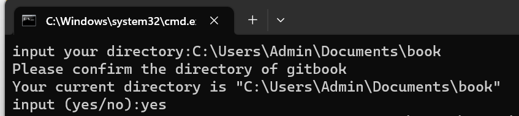
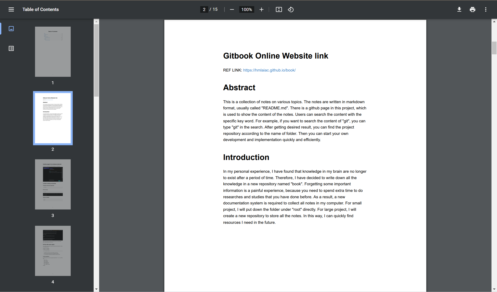

Problem Statement
- How to automate the gitbook initialization, build and deploy?
User Guide:
Folder name is case sensitive in this project, because the title of the book and chapter name will be generated from the folder name.
Book name: {1-book_name}
- Chapter name: {1.1-chapter_name}
e.g. folder_name {1-gitbook} --> 1. Gitbook
Project Workflow
flowchart TD
A[Input your directory] --> B[Input your confirmation]
B --> C{Is is confirmed?}
C -->|Yes| D[Initialize gitbook]
C -->|No| A
D --> E[Create SUMMARY.md]
E --> F[Initialize gitbook]
F --> G[Delete previous auto-generated files]
G --> H[Generate static website]
H --> I[Handle file conflicts]
User Guide
A. Prerequisites
- Windows 11
- Python 3.8.5 or above
- Gitbook (If you haven't installed gitbook, please refer to previous chapter to see the installation guide)
- Cablibre (Same as above)
B. How to use
- Clone the from book/Gadget.
- Inside the "Gitbook Automation" should include "md_to_gitbook.py" and "gitbook_auto_package.bat" programs
- The programs helps you to collect "ReadME.md" file in the repository automatically
- Click the "gitbook_auto_package.bat" to run the script, make sure your current system satisfies the prerequisites.
- You can run the bat file with administrator permission to prevent some errors

- Input your absolute directory, e.g. C:\Users\Admin\Documents\book
Make sure your root folder name of the project should be renamed to book

- In the command prompt, type "yes" to make sure your input directory is correct. It may cost you a lot of time if generating a large book file. 
C. Output Result
C1. A pdf file named book.pdf

C2. A static website repository
All files will stored in the "docs" folder, which is a special folder to help you build the page of github Follow the instructions from previous chapter, you can display your book with a static website If you understand the settings of github page and configure the page directory, commit and push this repository to github. You can find your book in a static website @Thomas smile :)